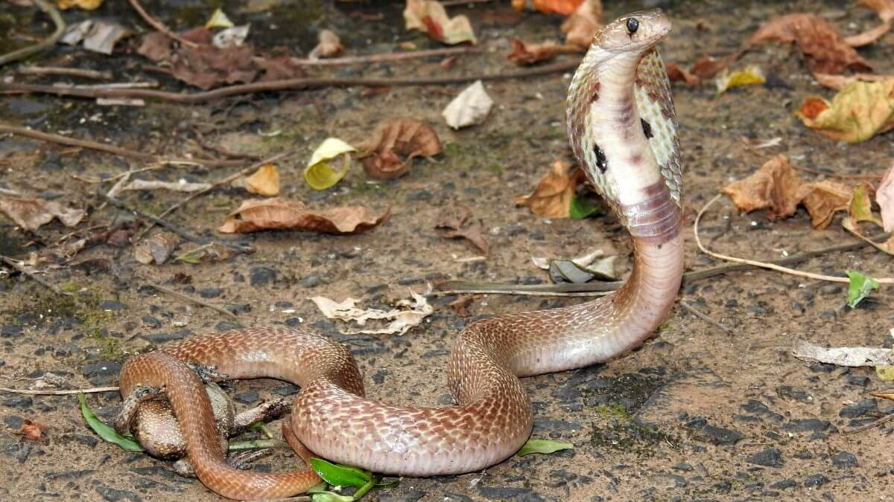

As Cobras Mais Venenosas do Mundo
As cobras mais venenosas são classificadas conforme a ação do veneno!
Explore o Mundo das Cobras Venenosas
As cobras são répteis da subordem Serpentes, encontradas em diversos habitats ao redor do mundo. Elas se locomovem por ondulações do corpo e mudam de pele regularmente. Carnívoras, engolem suas presas inteiras graças a uma mandíbula flexível. Algumas espécies são venenosas, utilizando o veneno para capturar presas e se defender. Culturalmente, cobras simbolizam sabedoria ou perigo em diferentes tradições. A conservação dessas espécies é crucial para manter o equilíbrio ecológico, pois ajudam a controlar populações de pequenos animais.
Entenda Sobre os 3 Grupos
As cobras mais venenosas do mundo são classificadas conforme a ação do veneno e são divididas em 3 grupos, de acordo com o local em que a substância tóxica age. Saiba abaixo quais são as cobras, o motivo da divisão dos grupos e mais sobre o perigo que cada um desses animais representa para os seres humanos.
O primeiro grupo é formado por cobras cujo veneno age no sistema nervoso periférico, levando à uma parada respiratória. O segundo grupo é constituído por serpentes que inoculam substâncias tóxicas e provocam distúrbios na coagulação do sangue, causando hemorragias e necrose local, ou seja, morte do tecido ou órgão local.
Já o último grupo é formado por cobras que liberam um tipo de veneno chamado de miotóxico, responsável por levar a destruição de fibras musculares e insuficiência renal aguda. Mas, mesmo divididas em grupos, todas essas espécies têm uma coisa em comum: são extremamente letais.
Vale Ressaltar
Cabe ressaltar que quando denominamos as cobras mais venenosas do mundo não queremos dizer necessariamente que são as que mais ferem os seres humanos. As serpentes desta lista são as que possuem os venenos mais tóxicos, contudo, nem sempre são as que mais atacam.
Conheça o Top 6 Cobras mais Venenosas

Cobra Taipan
A cobra Taipan é uma serpente da família Elapidae encontrada no litoral australiano e também na Nova Guiné. Essa espécie é subdividida em duas subespécies: a Taipan Costeira da Austrália e a Taipan de Papua, nativa da costa sul de Papua Nova Guiné. Estima-se que a quantidade contida nas presas é capaz de causar a morte de 100 homens. O veneno da Taipan é capaz de matar um ser humano em menos de 45 minutos. Antes dos antídotos serem desenvolvidos, não havia sobreviventes da picada de uma Taipan.
Víbora da morte
A víbora da morte pertence ao gênero Acanthophis e também é encontrada na Austrália e na Nova Guiné. Seu nome é proveniente da letalidade de seu ataque. Isso porque a víbora da morte tem o ataque mais rápido do mundo, e é capaz de dar o bote e voltar à posição inicial de ataque em apenas 0,13 segundo. A picada dessa serpente é uma das mais letais do mundo. Quando não tratada adequadamente, pode causar paralisia, falência respiratória e morte no indivíduo em apenas 6 horas. A boa notícia é que, assim como a cobra marrom, a víbora da morte ataca o ser humano somente reagindo ao se sentir ameaçada. Afinal, ela se alimenta de outras cobras menores.
Mamba Negra
A mamba negra é uma espécie encontrada em muitas partes do continente africano. Essa serpente é conhecida por sua agressividade e ataque preciso e mortal. A mamba negra é a cobra terrestre mais rápida do mundo, capaz de atingir velocidades de até 20 quilômetros por hora. Ela pode atacar sua vítima até 12 vezes seguidas. O veneno contido em uma única picada é capaz de matar entre 10 e 25 adultos. Formado por uma neurotoxina de ação rápida, o sintoma inicial da picada é dor local, na área da picada, embora não tão grave quanto o de cobras que causam necrose.
Cobra Krait Malasiana
A cobra krait malasiana é encontrada no sudeste da Ásia e Indonésia. Seu veneno é uma neurotoxina que rapidamente induz à paralisia muscular, seguida por cãimbras, tremores, espasmos e que termina em total paralisia. A morte pela krait malasiana ocorre entre 6 a 12 horas após a picada. Mesmo com o antídoto, as picadas dessa serpente podem ser letais. Quando administrado a tempo, apenas 50% de sobrevivência é garantida. Antes do desenvolvimento do antídoto, a letalidade era de 85%. Essa serpente tem hábitos noturnos, e é ainda mais agressiva sob a escuridão.
Serpente tigre
A serpente-tigre também é uma espécie encontrada na Austrália. Essa serpente possui veneno neurotóxico muito potente que, após a picada, pode causar a morte da vítima dentro de 30 minutos. No entanto, normalmente leva de 6 a 24 horas para o óbito. CONTINUA DEPOIS DA PUBLICIDADE Antes do desenvolvimento de um antídoto para o veneno da serpente-tigre, a taxa de mortalidade das vítimas era de 60 a 70%. Os sintomas da picada podem incluir dores localizadas na região do pé e pescoço, formigamento, dormência e suor excessivo, seguidos por dificuldades para respirar e paralisia do corpo.
Cobra Naja
Uma das espécies mais conhecidas, a naja está entre as cobras mais perigosas do mundo. Essa espécie é encontrada na África, Sudoeste da Ásia, Sul da Ásia e no Sudeste Asiático. Mesmo sendo venenosa, é comumente utilizada por encantadores de serpentes na Índia. Existem várias espécies da naja, entre elas, as cuspidoras, desenvolvem mecanismos de ataque especializado.
Finalização
Em suma, as cobras são criaturas incríveis com adaptações únicas que lhes permitem prosperar em diversos ambientes. As cobras venenosas, em particular, desempenham um papel crucial no controle de populações de presas, utilizando seu veneno para capturar alimentos e se defender de predadores. Embora muitas vezes temidas, é importante reconhecer que apenas uma pequena porcentagem de cobras representa um perigo real para os humanos. A preservação dessas espécies venenosas é fundamental para manter o equilíbrio ecológico e a biodiversidade.